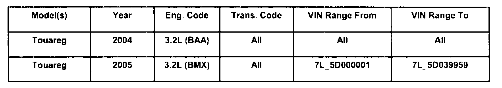
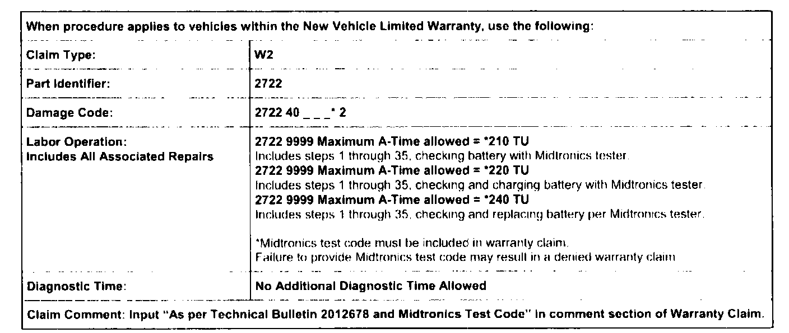
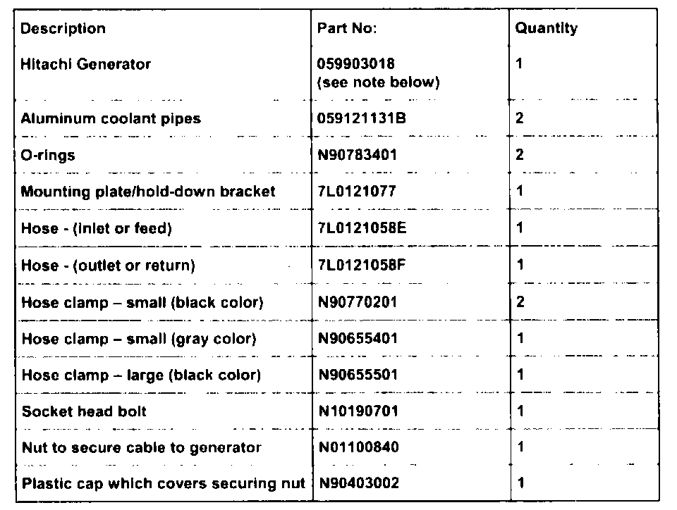
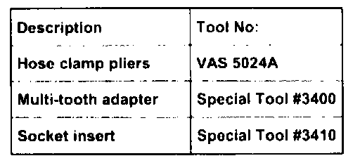

Charging System - Insufficient Generator Output: Overview
27 07 01Jan. 8, 2007
2012678

Affected Vehicles
Condition
Generator, Insufficient Output When Equipped with HID/Bi-Xenon Headlamps and/or Air Suspension
Touareg vehicles equipped with HID (high intensity discharge or Bi-Xenon) headlamps and/or air suspension and are equipped with a 150 Amp air-cooled generator, may not have enough capacity to provide power to electrical consumers and charge the battery due to a delayed load response. As a result, some electrical consumers may not function properly and load intervention condition will be present.
Technical Background
Low battery voltage condition may lead to abnormal or sporadic behavior in the electrical system components. The low battery voltage condition may result in the unnecessary replacement of parts if the condition is not properly diagnosed.
Production Solution
As of VIN: 71_5D039960, all Touareg vehicles are produced with 190A liquid-cooled generators. The use of the 150A air-cooled generator has been discontinued for the Touareg model.

*Code per warranty vendor code policy.
Warranty

Required Parts and Tools
Tip:

Part number(s) are for reference only. Always see ETKA for the latest part(s) information.